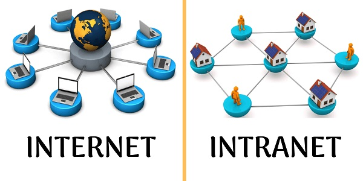

Ethernet é a tecnologia que permite a conexão física entre dispositivos como computadores, impressoras, switches e roteadores em redes locais. Por ser escalável e de fácil manutenção, esse padrão é amplamente usado para conectar dispositivos através de cabos para a transmissão de dados.
O que é intranet?
Trata-se de uma rede exclusiva na qual colaboradores e funcionários usam para se comunicar, compartilhar dados e acessar recursos internos da empresa.

Extranet é uma rede de comunicação que usa a infraestrutura da internet, porém restrita a um grupo específico de usuários. Ela permite que usuários autorizados acessem recursos e dados que estão fora da rede interna (intranet) de uma organização, também protegidos por mecanismos de segurança.